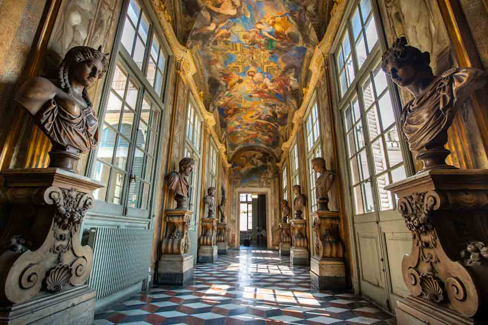

Palazzo Balbi Senarega (Balbi 4): Vista prospettica della Galleria affrescata, prezioso esempio di spazio monumentale interno del palazzo di Ateneo. [cite: 2026-03-04]
Glossario dei Rolli di Ateneo
Benvenuti nel repertorio terminologico digitale dedicato alla descrizione architettonica e artistica del sistema dei Palazzi dei Rolli di Genova di proprietà dell'Ateneo. Questo progetto di ricerca si propone di migliorare l'accessibilità culturale del patrimonio architettonico universitario attraverso l'implementazione di schede terminologiche basate sul modello teorico e metodologico utilizzato presso il Centro di Ricerca in Terminologia Multilingue (CeRTeM) dell'Università di Genova, consentendo al contempo una profonda valorizzazione del patrimonio culturale storico della città.
Traduzione Rapida

Interfaccia Italiana
Navigazione tridimensionale sincrona da IT a FR

Interface Française
Navigation synchrone tridimensionnelle de FR à IT
Consultazione Glossario